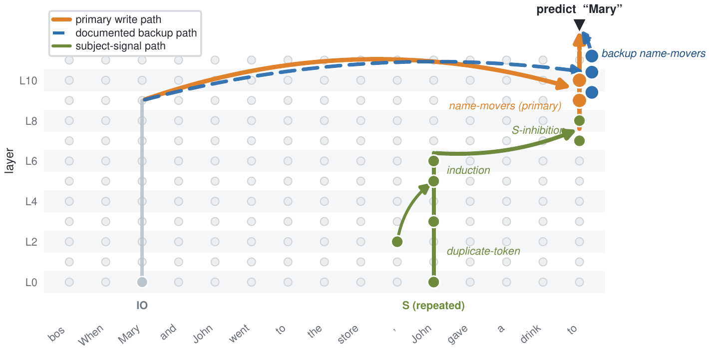
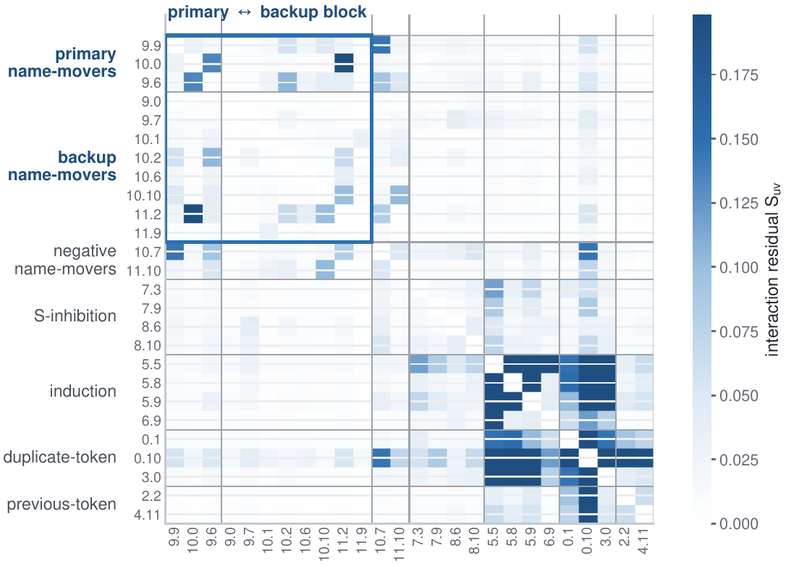
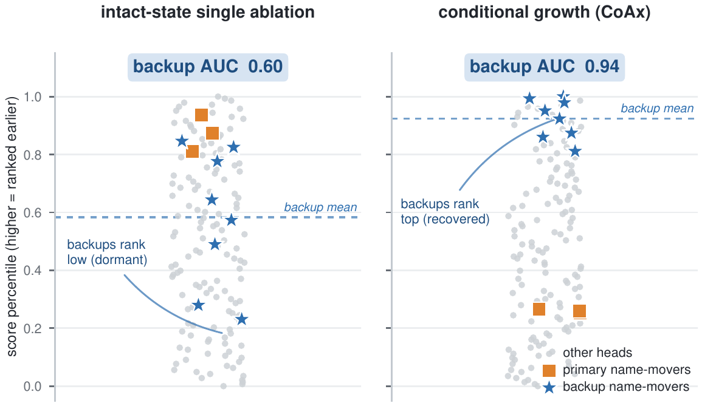
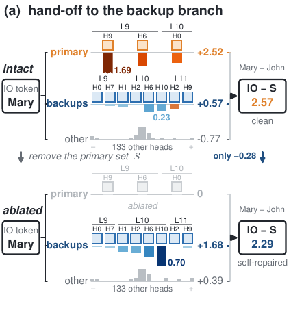
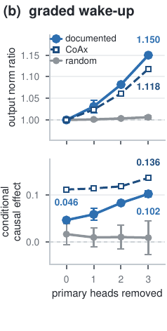
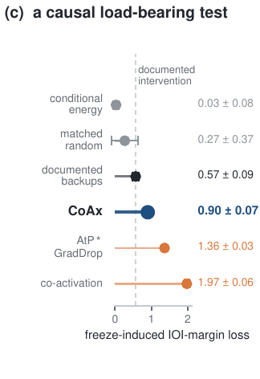
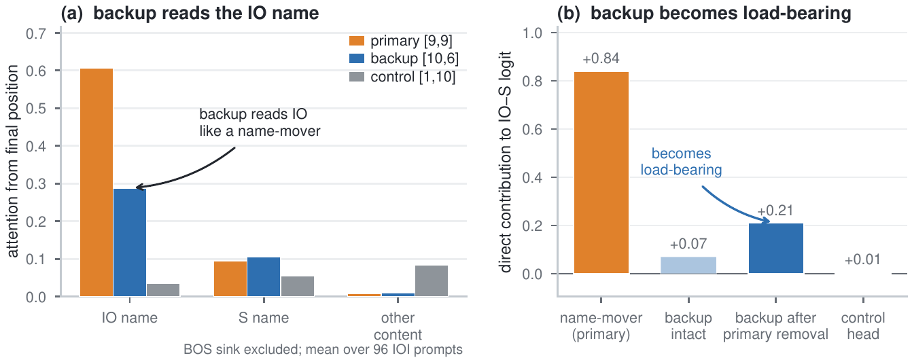
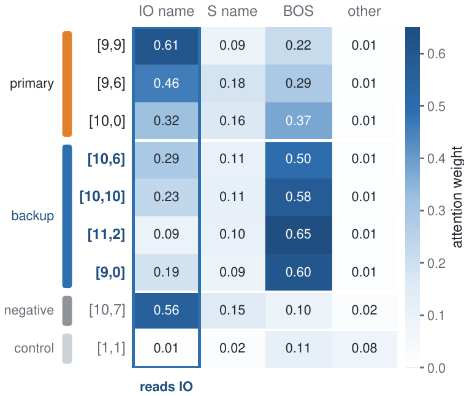
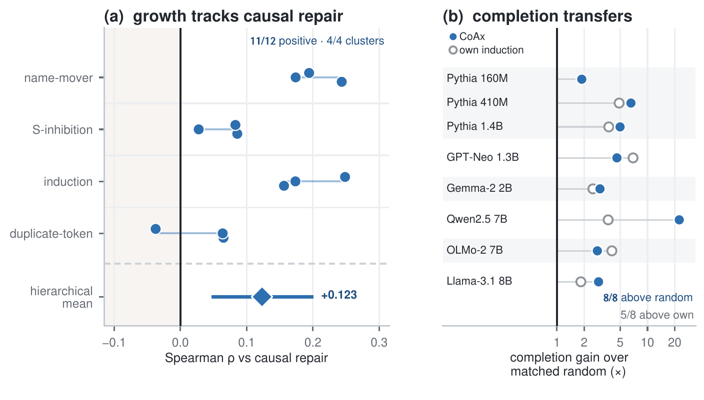
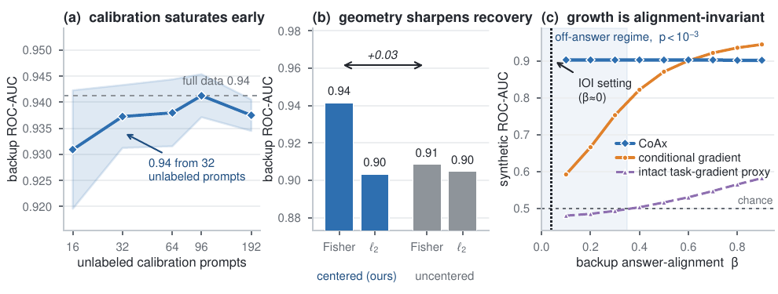

A component's importance is not a property it carries alone. In a self-repairing circuit it becomes visible only relative to what has been removed — and that single shift is what CoAx measures, turning a blind spot into a signal.
The ablation we use to test a circuit changes the circuit
A behavior is localized to a circuit, and the standard test is to ablate a component and measure the resulting output change. Self-repair breaks that test: ablating a primary component can activate a dormant backup, changing which circuit carries the behavior in the first place.
Two wrong conclusions from one measurement
Remove a primary head and a dormant backup takes over. The output barely moves, so the primary reads as unimportant — the model quietly repaired the damage. And the backup was silent on the intact model, so it reads as unimportant too.
So a circuit can faithfully explain the original model and still be incomplete under the very ablation used to test it. That raises a conditional question: which components become causally important only after a known part of the circuit is removed?
of a 2.57 margin
is all that moves when the
three primary name-movers are ablated — eight documented backups compensate
non-additive
ablating the primaries
together with those backups costs 1.9× the sum of their individual effects

Scoring on the intact model cannot tell a dormant backup from an irrelevant head — both are silent. So we change the question.
Ask what grows once the primary set is gone
We formalize the gap as conditional circuit completion: given a primary set S supplied by the analyst, identify the components whose causal importance emerges only after S is removed. CoAx scores each candidate by the growth of its ablation effect under that conditioning, measured in the output distribution's own (Fisher) geometry:
The problem Single-head ablation on the intact model
Ablate each candidate alone. A dormant backup barely moves the output, so it scores like an irrelevant head.
Nothing clears the detection bar → backups missed, circuit incompleteness 0.75.
The fix Conditional co-ablation ablate S
Remove S, then re-score by the growth Δ of each head's ablation effect. Self-repair forces the backups to carry the behaviour.
The two backups surge past the bar → recovered at 0.941 ROC-AUC.
On the intact model a dormant backup and an irrelevant head look identical. CoAx conditions on removing the primary set S, so a backup's suppressed contribution reappears as measurable growth — recovering self-repair components that intact-state scores cannot see.
Blind-spot-proof
A dormant backup and an irrelevant head look identical on the intact model. CoAx separates them: the backup's effect grows once its primary is gone; the irrelevant head's does not.
Cheap & label-free
Two shared reference passes plus two per candidate: O(|U|) forward evaluations. No backward pass, no task gradient, no labels.
A completion, not a rewrite
The primary set can come from any intact-state method; CoAx completes that circuit by returning the branch it hides.
Why conditioning is the right instrument — two results
Proposition 1 · the blind spot is real
A perfectly dormant backup can be indistinguishable from an irrelevant component for every intact-state score — anything computed from a candidate's activations, output derivatives, or single-ablation effect on the original model. It is non-identifiability for the whole class, not weakness in one score.
Proposition 2 · what conditioning buys
The change in a candidate's ablation effect once S is removed is exactly the aggregate of every interaction order linking it to S. Enumerating those terms is combinatorial in |S|; conditioning returns the whole aggregate in O(|U|) forward evaluations.

The structure is there in the interaction signal. Does conditioning actually surface the documented backups?
From the blind spot to the top of the ranking
On the GPT-2-small IOI circuit — the one with head-level backup ground truth — we supply the three primary name-movers, rank the other 141 heads by conditional growth, and score against the eight documented backups. Labels are used only for evaluation.
| score | backup ROC-AUC |
|---|---|
| AtP intact | 0.650 |
| single ablation intact | 0.603 |
| conditional gradient removed | 0.767 |
| activation-space EAP-IG intact | 0.581 |
| conditional energy removed | 0.758 |
| AtP* GradDrop intact | 0.665 |
| CoAx intact→removed | 0.941 |
The gain is the two-state contrast — not simply reading the intervened model alone. CoAx improves by 0.276 over the strongest intact-state attribution baseline and by 0.174 over the strongest removed-state control. Applying the same contrast to AtP* reaches 0.938, confirming that conditioning carries the central signal; CoAx measures the exact finite, full-distribution intervention effect without task gradients. Under the 8/141 class imbalance the separation is starker in average precision: 0.557 versus 0.098 for AtP*.
Holding the contrast fixed and replacing the Fisher geometry with plain ℓ2 still gives 0.905, so conditioning carries the main signal and the geometry sharpens it.
The component analysis also evaluates a normalized CoAx variant (0.984 AUC). It is not a separate baseline: signed growth is the default because it has the exact interaction decomposition, transfers directly across mechanisms, and avoids division by near-zero intact effects.

Recovery tracks which circuit was removed
We search 5,000 random three-head sets and keep the 16 that best match the true primary set in behavioral damage, in primary-set Fisher displacement, and in depth. On held-out prompts those matched wrong sets recover the backups at only 0.40 ± 0.13 AUC, while the true primary set stays at about 0.94. The interventions are matched both in task-level damage and in output-space displacement measured in the same geometry as the score — and they still fail to expose the branch.
A second control rules out normalization: replaying the ablated forward pass with clean LayerNorm denominators raises backup AUC from 0.941 to 0.983. LayerNorm rescaling does not create the signal; removing it suppresses background growth and sharpens the separation.
A high rank is necessary, not sufficient. Are the surfaced heads mechanistically backups?
They wake up — and the wake-up is causal
Two stronger questions than ranking: does the backup response grow as more of the primary circuit is removed, and does preventing that response remove the repair?



The hand-off is graded
the backup
branch roughly triples its direct contribution to the answer, while the margin falls only
2.57 → 2.29
CoAx’s set is load-bearing
IOI-margin
loss from freezing its top-8 — against 0.57 for the documented backups, 0.27 for a size-matched
random set and 0.03 for conditional energy

One head, two views
A single documented backup, [10,6], is silent on the intact model, yet from the answer position it already attends to the indirect-object name — the structural signature of a name-mover.
Its direct IO−S contribution grows from +0.07 intact to +0.21 once the primary name-movers are removed, while a random comparison head stays near zero. Invisible in the intact state, structurally a name-mover, causal only under conditioning.

If the branch is load-bearing, adding it back should repair the causal account that was incomplete.
Completing the circuit
Recovery is not the goal in itself: the recovered components should repair the causal account that was incomplete under intervention. We take the same raw headline ranking used in discovery — no backup labels, no task gradient, no task-direction filter — and use its top eight heads as the completion.
Following Wang et al., completeness asks whether a circuit reproduces the full model's response to the same ablation. Writing D(C) for the gap between the full model's response to primary-set removal and the circuit's own, lower is better.
Circuit completion
| circuit | incompleteness D(C) ↓ |
|---|---|
| primary circuit (backup branch removed) | 0.474 ± 0.030 |
| documented circuit | 0.300 ± 0.027 |
| + conditional energy top-8 | 0.181 ± 0.027 |
| + CoAx top-8 | 0.236 ± 0.037 |
| + normalized CoAx variant top-8 | 0.258 ± 0.035 |
| + random top-8 | 0.499 ± 0.073 |
Adding the label-free CoAx set reduces incompleteness from 0.47 to 0.24. Conditional energy gives a smaller scalar gap but a much worse backup-role knockout, separating response magnitude from branch identity.
Backup-role knockout
| top-up | margin dist. ↓ | output KL ↓ | unrel. KL ↓ |
|---|---|---|---|
| documented backups | 0.00 | 0.00 | 0.09 |
| + CoAx | 0.99 | 0.17 | 0.14 |
| + normalized CoAx variant | 0.99 | 0.07 | 0.09 |
| + conditional energy | 1.71 | 0.46 | 0.47 |
| + co-activation | 1.79 | 0.47 | 0.15 |
| + CoAx next-8 | 2.03 | 1.38 | 0.86 |
| + AtP* GradDrop | 2.70 | 1.02 | 0.47 |
| + random | 1.24 | 0.47 | 0.24 |
Reversing the intervention: removing the selected set should reproduce the documented backup effect. A large drop alone would not identify the branch — disrupting unrelated computation also hurts IOI — so we track collateral KL on unrelated text as well.
One circuit, one model — does the conditional signal hold more broadly?
Beyond one annotated circuit
Two tests without backup labels: does conditional growth agree with independently measured repair across mechanisms, and do the recovered sets complete circuits in other models?

Across mechanisms
positive agreement with
held-out causal repair over name-mover, S-inhibition, induction and duplicate-token clusters;
hierarchical mean +0.123, nested 95% CI [+0.047, +0.201]
Across models
completion beats a size-matched
random set on every non-GPT-2 model — Pythia 160M/410M/1.4B, GPT-Neo 1.3B, Gemma-2 2B,
Qwen2.5 7B, OLMo-2 7B, Llama-3.1 8B — and beats each model's own next induction heads on
5 of 8
What a nearby control shows
Input-side co-activation gives a complementary intact-state view and nearly matches CoAx on backup-label AUC (0.93 versus 0.941). But freezing its selected set causes a much larger raw IOI-margin loss (1.97 versus 0.90) while matching the documented backup knockout substantially worse — it disrupts the wider computation rather than isolating the repair branch. High label overlap is not the same as isolating the mechanism.
What makes the score work — and what it costs
Conditioning carries the signal, the centered Fisher geometry sharpens it, and the price is forward passes only: no backward pass, no task gradient, no labels, and every candidate intervention is independent and batchable.

Paper, code, video, and citation
@misc{gong2026coax,
title = {Conditional Co-Ablation: Recovering Self-Repair Backups in Transformer Circuits},
author = {Gong, Zhiren and Lu, He and Wang, Tiantong and Zhang, Yichi and Wang, Yixin
and Zeng, Zihao and Xiao, Ming and Yuen, Chau and Lim, Wei Yang Bryan},
year = {2026},
eprint = {2607.01940},
archivePrefix = {arXiv},
primaryClass = {cs.LG},
note = {Project page:
https://gongzhiren.github.io/Conditional-Co-Ablation-website}
}